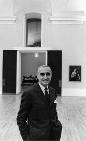

Luigi Caccia Dominioni
Luigi Caccia Dominioni was born in Milan, where he currently lives and works, December 7, 1913. Ambrose son of lawyer, former mayor of the city of Morbegno in Valtellina, and Mary Paravicini, Caccia Dominioni lives his youth in the heart of Milan, in the family home in Piazza Sant'Ambrogio, meaningful place for his professional career .
In 1931 he enrolled at the Faculty of Architecture at the Politecnico di Milano where he meets, also students, the Castiglioni brothers; Bernasconi who then worked for Olivetti; Peressuti and Rogers; Zanuso; Renato Castellani, Lattuada and Comencini, which later became film directors. Thanks to the leadership of two extraordinary teachers, Moretti and Portaluppi, in this group of young emerging talent and passions. As declared by the same Caccia Dominioni: "... we were learning to make plans, it was clear we had a vocation, though ours was a mission."
In 1936, Caccia Dominioni graduated in Architecture and opened a professional studio with his brothers Castiglioni. Despite the difficult years of autarchy, close to the second world war, the enthusiasm for architecture is great and Hunting Dea, along with his colleagues, he feels encouraged to address both issues of a smaller scale, such as the design of 'everyday object and interior architecture, and broader challenges such as industrial design and participation in competitions, exhibitions and events.
In fact in those years its holdings in several Triennial - to VI in 1936 with the exhibition Priority Italic in art, to VII in 1940 with the presentation of the radio receiver Phonola five valves - and to several major competitions with significant innovative solutions. It is ranked second in the competition for the arrangement of the center of Rijeka in 1939, winner of the competition for placement in the center of Morbegno in 1941 and one for the school Vimercate in 1948. This intense professional activity is necessarily discontinuous due to the call to military service as an army officer (1939) and the call to arms during the conflict (1941-1943). In 1941 he married Natalia Tosi, with whom he had three children. Following his refusal to join the Republic of Salò is once again forced to suspend their professional activity and in 1943 he took refuge in Switzerland, where he remained until 1945.
On his return he opened his own professional studio in one of the apartments of the historic family home, the palace in Piazza Sant'Ambrogio destroyed by bombing and realized again on the same project Caccia Dominioni on the grounds of the old residence . In 1947 he founded together with friends architect Ignazio Gardella and the lawyer Corrado Corradi Dell'Acqua Azucena , which will produce handcrafted furniture and design objects , including the famous handles he designed . The postwar years saw the architect involved in several projects related to building urban characterized by respect for the needs of the new entrepreneurial middle class representative Lombard . Realizes, in fact , the family home in Piazza Sant'Ambrogio ( 1947-50 ) , the condos on Nievo (1955) , in Via Massena ( 1958-63 ) , of Via XX Settembre ( 1958-64 ) , in via Vigoni (1959) , in Piazza Carbonari ( 1960-61 ) , the building in Corso Monforte ( 1963-64 ) , offices They Parisini ( 1951-57 ) , the five office locations in over Europe ( 1953-59 , 1963 - 66) , the internal restructuring of the Library and Pinacoteca Ambrosiana (1966), the connection between the church of San Fedele and the Chase Manhattan Bank in Piazza Meda ( 1969-70 ) .
The great expressive rigor , flexible to any concrete demands the use of space , the sensitivity to the technological components and the perfect mastery of the formal processes are the basis of " employment history " by Luigi Caccia Dominioni and its contribution to the culture of European modernity ' inhabiting that, while picking up the legacy of the Lombard tradition , does not live as a constraint limiting but rather as an incentive to harmonize pre-existing and new projects. The design activity undertaken already in '47 continues with the design and put into production of a large number of pieces, such as the floor lamp Monachella of 1953 , the chair Catiline of 1958 , the handle Eggplant 1960, the small cabinet Casaccia 1962, the sofa and armchair Bull of 1973 to get to the bench in metal Monforte and the handle of the Crystal 1986.
Later, in the late 1960s, Magistretti was once again involved in the transformation of Milan. This time he worked with his great friend Luigi Caccia Dominioni on Milano-San Felice, the first out-of-town, middle-class neighbourhood, with its hidden traffic, horseshoe form and garden city qualities. This concept was to be copied in other similar neighbourhoods all over Italy, but often to a much lower quality, in the 1970s and 1980s.
Returning to the more tied to architecture Caccia Dominioni continues with other works such as the Library Vanoni in Morbegno ( 1965-66 ), some religious buildings such as the Church of San Biagio in Monza ( 1968) , the churches of Arenzano (1968) and of St. Joseph in Morbegno (1988-1993) , the major residential complexes Milano San Felice (1967-1975 in collaboration with Vico Magistretti ) , the Golf Club of Monticello in Fino Mornasco in the province of Como (1972-1985) , the complexes Garbagnate and via Mangolfa (1991-1996) , the registered office of the Catholic Verona ( 1967-1970) . It is not to forget the experience of seven years in the Principality of Monaco (1975-1982) , where he realizes that ' important residential building that bears the name of Parc Saint Roman .
Date back to 1989, the project for the refurbishment of Piazza Santo Stefano in Bologna and the study for the pedestrianization within the Fiera di Milano, 1990, the Center Ekotecne between Lecce and Monteroni and , recently, the accommodation in Piazza San Babila in Milan , projects for the refurbishment of part of the headquarters building of Banca Popolare di Verona designed by Carlo Scarpa and the reorganization of the Faculty of Agriculture in Bologna . Examining the work of Caccia Dominioni , is perceived quite clearly and beautifully expressed , the general law to which he aspires. The declares himself : " I am a piantista in the sense that we are on the plant , we die, whether it be that of an office building of an apartment of sixty square meters all the way ... I am an architect and I find the urban planning everywhere ... In fact the apartment is a micro , with its paths , its constraints , social spaces and private ones.
I have always loved small spaces and I always gave the soul to make them look larger, eg by lengthening the paths , in contrast to a trend that tends to reduce them. Direct entry into the living room do not love him because there are no surprises , while the task of the architect , I believe is the fostering of a succession of emotions ... My inputs , my stairs, even the furniture is urban solutions . "